전자계산기기능사 (2015-04-04 기출문제)
1과목: 전기전자공학
1. 저주파 증폭기에서 음되먹임을 걸면 되먹임을 걸지 않을 때에 비하여 어떻게 되는가?
- 전압이득이 커진다.
- 주파수 통과대역이 좁아진다.
- 주파수 통과대역이 넓어진다.
- 파형이 일그러진다.
(정답률: 54%)

2. 그림과 같은 회로의 출력 파형은?
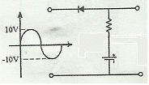
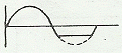
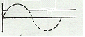
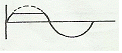
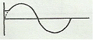
(정답률: 61%)
3. 수정 발진 회로의 특징으로 틀린 것은?
- 수정 진동자 Q가 높기 때문에 주파수 안정도가 높다
- 수정 진동자는 기계적, 물리적으로 강하다.
- 발진 조건을 만족하는 유도성 주파수 범위가 매우 좁다.
- 주위 온도의 영향에 매우 민감하다.
(정답률: 54%)
4. 펄스폭이 10[μs]이고, 주파수가 1[kHz]일 때 충격 계수(duty factor)는?
- 1
- 0.1
- 0.01
- 0.001
(정답률: 57%)
5. 그림과 같은 바이어스 회로의 안정계수 S는?(단, β= 49, Rc = 2[kΩ], Vcc = 10[V]이다.)
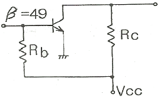
- 50
- 59
- 98
- 200
(정답률: 43%)
6. 800[kW], 역률 80%인 부하가 15분간 소비하는 유효 전력량은?
- 150[kWh]
- 200[kWh]
- 250[kWh]
- 1600[kWh]
(정답률: 48%)
7. 펄스회로에서 펄스가 0에서 최대 크기로 상승될 때를 100%로 한다면 상승시간(rise time)은 몇 % 로 하는가?
- 0%에서 10%
- 10%에서 90%
- 20%에서 150%
- 90%에서 100%
(정답률: 80%)
8. 피어스 BC형 발진회로의 구성은 어떤 발진회로와 비슷한가?
- 이상형 발진회로
- 하틀레이 발진회로
- 빈브리지 발진회로
- 콜피츠 발진회로
(정답률: 49%)
9. 온도에 따라서 저항값이 변화하는 소자로서 소형이며 가격이 저렴하고, 일반적으로 120[℃]정도 이하인 곳에서 널리 사용되는 것은?
- 열전대
- 포토다이오드
- 서미스터
- 포토트랜지스터
(정답률: 59%)
10. 저항과 콘덴서로 구성된 RC 직렬회로의 시정수 는?
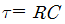
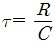
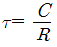
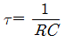
(정답률: 57%)
2과목: 전자계산기구조
11. 2진수 데이터 1100 1010과 1001 1001을 AND 연산한 경우 결과 값은?
- 1101 1011
- 1001 0100
- 1000 1000
- 0110 0101
(정답률: 78%)
12. 중앙처리장치와 입출력 장치 사이의 데이터 전송 방식에 대한 종류와 특징이 일치하지 않는 것은?
- 스트로브 제어 방식은 스트로브 신호를 위한 별도의 회선이 불필요하다.
- 핸드세이킹 방식은 송신 쪽과 수신 쪽이 동시에 동작해야 한다.
- 비동기 직렬전송 방식은 저속 장치에 많이 사용된다.
- 큐에 의한 전송 방식은 비동기적이고 속도차가 많은 장치에 사용된다.
(정답률: 46%)
13. 2진수 (1011)2 을 그레이 코드로 변환하면?
- (1000 )G
- (0111)G
- (1010)G
- (1110)G
(정답률: 72%)
14. 입력장치의 종류가 아닌 것은?
- 스캐너(scanner)
- 라이트펜(light pen)
- 디지타이저(digitizer)
- 플로터(plotter)
(정답률: 78%)
15. 송·수신 단말장치 사이에서 데이터를 전송 할 때마다 통신경로를 설정하여 데이터를 교환하는 방식은?
- 메시지 교환방식
- 패킷 교환방식
- 회선 교환방식
- 포인트 투 포인트 방식
(정답률: 57%)
16. 수치 중에서 소수점이 특정 위치로부터 얼마나 이동하고 있는지를 표시하는 수를 포함하는 방법을 무엇이라 하는가?
- 고정 소수점 표시
- 부동 소수점 표시
- 고정 워드 길이 표시
- 가변 워드 길이 표시
(정답률: 74%)
17. 2진수 비트스트림 11000001 11000010을 1의 보수(1′s complement) 연산 수행하였을 때 결과 값은?
- 11000001 11000010
- 00111110 00111101
- 00111110 11000010
- 11000001 00111101
(정답률: 78%)
18. 집적회로의 일반적인 특징에 대한 설명으로 옳은 것은?
- 수명이 짧다.
- 크기가 대형이다.
- 동작속도가 빠르다.
- 외부와의 연결이 복잡하다.
(정답률: 71%)
19. 자료 구조의 구성 단계를 옳게 표현한 것은?
- byte → bit → word → file → record
- bit → byte → word → record → file
- bit → word → byte → record → file
- bit → byte → record → file → word
(정답률: 78%)
20. 1×4 디멀티플렉서(DMUX : demultiplexer)에서 필요한 선택 신호의 개수는?
- 1개
- 2개
- 4개
- 8개
(정답률: 75%)
21. 오퍼랜드(Operand) 자체가 연산 대상이 되는 번지지정 방식은?
- 직접번지지정방식
- 간접번지지정방식
- 상대번지지정방식
- 즉시번지지정방식
(정답률: 42%)
22. 에러의 검출과 동시에 교정까지 가능한 코드는?
- 해밍코드
- 3초과 코드
- 그레이코드
- 시프트 카운터 코드
(정답률: 83%)
23. 주기억장치의 크기가 4Kbyte 일 때 번지(ADDRESS)수는?
- 1번지에서 4000번지까지
- 0번지에서 3999번지까지
- 1번지에서 4095번지까지
- 0번지에서 4095번지까지
(정답률: 61%)
24. 다음 설명이 의미하는 입출력 방식은?
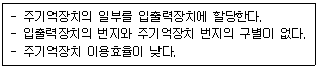
- 격리형 입출력 방식
- 메모리 맵 입출력 방식
- 혼합형 입출력 방식
- 버스형 입출력 방식
(정답률: 47%)
25. 미국에서 개발한 표준 코드로서 개인용 컴퓨터에 주로 사용되며, 7비트로 구성되어 128가지의 문자를 표현할 수 있는 코드는?
- EBCDIC
- UNICODE
- ASCII
- BCD
(정답률: 86%)
26. 명령어 실행 사이클(Instruction Execution Cycle)에 들어 가지 않는 것은?
- 결과를 기억시킨다.
- 명령어를 해독한다.
- 지정된 연산을 수행한다.
- 명령어가 지정한 오퍼랜드를 꺼낸다
(정답률: 41%)
27. BCD 코드에 의한 수 0010 0101 0011을 10진수로 옳게 나타낸것은?
- (250)10
- (251)10
- (252)10
- (253)10
(정답률: 78%)
28. 8비트 컴퓨터의 Register에 관한 설명으로 옳지 않은 것은?
- Accumulator는 8비트 레지스터이다.
- 프로그램카운터(PC)는 16비트 레지스터이다.
- 인터럽트 발생 시 복귀할 주소는 PC에 저장한다.
- 명령코드는 Instruction Register에 저장된다.
(정답률: 52%)
29. 일반적인 음의 정수를 컴퓨터 내부에 표현하는 방법이 아닌 것은?
- 부호와 절대값
- 부호와 1의 보수
- 부호와 2의 보수
- 부호와 3의 보수
(정답률: 75%)
30. 명령어가 일상적인 문장에 가까워 사람이 이해하기 쉬운 프로그래밍 언어의 형태는?
- 저급언어
- 고급언어
- 어셈블리언어
- 기계어
(정답률: 77%)
3과목: 프로그래밍일반
31. 운영체제의 역할과 거리가 먼 것은?
- 사용자와 시스템간의 인터페이스 역할
- 데이터 공유 및 주변장치 관리
- 원시 프로그램의 목적 프로그램 변환
- 차원의 효율적 운영 및 자원 스케줄링
(정답률: 72%)
32. 하나의 시스템을 여려 명의 사용자가 시간을 분할하여 동시에 작업할 수 있도록 하는 방식은?
- Distributed System
- Batch Processing System
- Time Sharing System
- Real TIme System
(정답률: 77%)
33. 순서도의 역할로 거리가 먼 것은?
- 프로그램 작성의 기초가 된다.
- 프로그램의 인수, 인계가 용이하다.
- 시스템 하드웨어의 설계 구조를 쉽게 파악할 수 있다.
- 프로그램의 정확성 여부와 오류를 쉽게 판단할 수 있다.
(정답률: 51%)
34. 기계어에 대한 설명으로 옳지 않은 것은?
- 인간에게 친숙한 영문 단어로 표현된다.
- 실행할 명령, 데이터, 기억장소의 주소 등을 포함한다.
- 각 컴퓨터마다 서로 다른 기계어를 가진다.
- 작성된 프로그램의 수정, 보수가 어렵다.
(정답률: 74%)
35. C언어에서 사용되는 문자열 출력 함수는?
- putchar()
- prints()
- printchar()
- puts()
(정답률: 74%)
36. 프로그램 문서화의 목적과 거리가 먼 것은?
- 프로그램 개발 과정의 요식 행위화
- 프로그램 개발 중 변경에 따른 혼란 방지
- 프로그램 이관의 용이함 도모
- 프로그램 유지보수의 효율화
(정답률: 61%)
37. 운영체제의 성능 평가 사항과 거리가 먼 것은?
- Availability
- Cost
- Turn Around Time
- Throughput
(정답률: 72%)
38. C언어에서 사용되는 이스케이프 시퀀스(Escape Sequence)에 대한 설명으로 옳지 않은 것은?
- \r : carriage return
- \t : tab
- \n : new line
- \b : backup
(정답률: 63%)
39. 원시 프로그램을 한 문장씩 번역하여 즉시 실행하는 방식의 언어번역 프로그램은?
- 컴파일러
- 링커
- 로더
- 인터프리터
(정답률: 51%)
40. 프로그램의 처리 과정 순서로 옳은 것은?
- 적재 → 실행 → 번역
- 번역 → 적재 → 실행
- 적재 → 번역 → 실행
- 번역 → 실행 → 적재
(정답률: 57%)
4과목: 디지털공학
41. (27)10를 2진수로 변환하면?
- (11011)2
- (11001)2
- (11000)2
- (10111)2
(정답률: 63%)
42. 반가산기 회로에서 두 입력이 A, B라고 하면, 합, S와 자리올림 C의 논리식은?
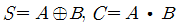
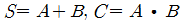
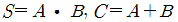
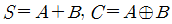
(정답률: 60%)
43.
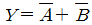
의 보수를 구하면?- Y = A + B
- Y = AB
- Y = A
- Y = B
(정답률: 59%)
44. 다음 회로의 설명 중 틀린 것은?(단, 초기상태는
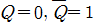
)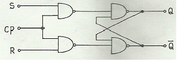
- RST 플립플롭
- CP=0이고 S=1, R=0이면
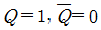
- CP=1이고 S=0, R=1이면
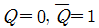
- S=R=1 인 상태는 금지
(정답률: 49%)
45. 안정된 상태가 없는 회로이며, 직사각형파 발생회로 또는 시간 발생기로 사용되는 회로는?
- 플립플롭
- 비안정 멀티바이브레이터
- 쌍안정 멀티바이브레이터
- 단안정 멀티바이브레이
(정답률: 73%)
46. 디지털 장치에서 많이 쓰이는 회로로서 클록 펄스의 수를 세거나 제어 장치에서 중요한 기능을 수행하는 것은?
- 계수회로
- 발진회로
- 해독기
- 부호기
(정답률: 68%)
47. 다음 4비트 2진수를 그레이코드로 변환하였을 때 틀린 것은?
- 0011 → 0010
- 0111 → 0101
- 1001 → 1101
- 1011 → 1110
(정답률: 62%)
48. 정상적인 경우 8×1 멀티플렉서는 몇 개의 선택선을 가지는가?
- 1
- 2
- 3
- 4
(정답률: 66%)
49. 다음 논리식을 카르노맵을 이용하여 간략화 하면?
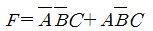
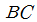
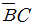
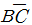
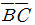
(정답률: 64%)
50. 다음 JK플립플롭의 특성표에서 가, 나, 다, 라에 들어갈 항목으로 옳은 것은?
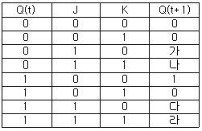
- 가 –0
- 나 –1
- 다 –0
- 라 –1
(정답률: 53%)
51. 다음 순서논리회로의 명칭은?
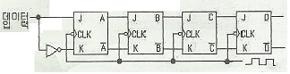
- 리플계수기
- 링카운터
- 시프트레지스터
- 10진 계수기
(정답률: 47%)
52. 다음의 그림과 같은 회로는 어떤 게이트인가?
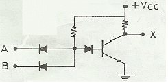
- AND
- OR
- NAND
- NOR
(정답률: 49%)
53. 아래 회로도에 ?=1을 가했을 때 해당하는 플립플롭은?
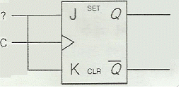
- D F/F
- T F/F
- RS F/F
- JK F/F
(정답률: 49%)
54. 레지스터를 구성하는데 가장 많이 사용되는 회로는?
- Encoder
- Decoder
- Half Adder
- Flip-Flop
(정답률: 77%)
55. 다음 진리표의 명칭으로 옳은 것은?
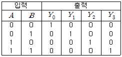
- 디코더
- 인코더
- 멀티플렉서
- 디멀티플렉서
(정답률: 48%)
56. 다음 진리표와 같은 값을 갖는 논리게이트(logic gate)는?
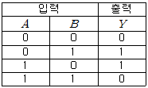
- XOR
- NAND
- NOR
- AND
(정답률: 70%)
57. 2진 리플 계수기에 사용된 플립플롭이 3개 일 때 계수할 수 있는 가장 큰 수는?
- 5
- 6
- 7
- 8
(정답률: 37%)
58. 논리식
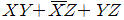
을 불 대수의 정리를 이용하여 간소화 하면?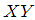
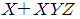
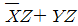
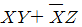
(정답률: 36%)
59. 동기식 5진 계수기에서 계수값이 순차적으로 변환하는 경우 ( )에 들어갈 2진수를 10진수로 옳게 변환한 것은?
- 1
- 2
- 3
- 4
(정답률: 68%)
60. 8비트 기억소자를 사용한 시스템에서 양수와 음수를 표현하려 할 때 그 사용 영역은 얼마인가?
- +27 ~ + (27-1)
- -27 ~ + (27-1)
- -28 ~ + (28-1)
- -27 ~ + (27+1)
(정답률: 53%)